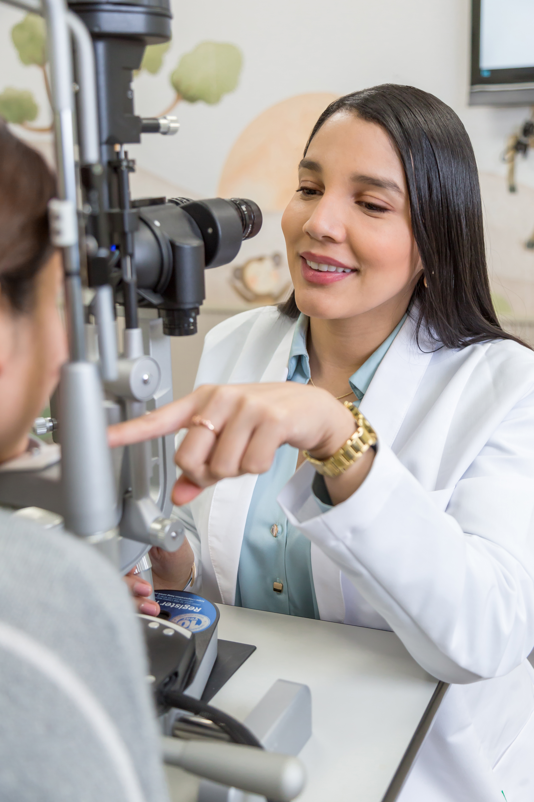

Tijuana Eye Center®
Tijuana Eye Center®
Tijuana Eye Center®
Tijuana Eye Center®
Más de 50 años ayudando a pacientes de México y Estados Unidos a recuperar y proteger su visión mediante cirugía ocular, de alta tecnología y atención personalizada, en un solo lugar.
Quiero mejorar mi visión
Muchos pacientes logran reducir o eliminar la dependencia de lentes, según su evaluación médica. Corrige miopía, hipermetropía y astigmatismo con cirugía FemtoLASIK de alta precisión y vuelve a disfrutar una visión nítida en un procedimiento ambulatorio que dura solo unos minutos.
Agenda tu evaluación FemtoLASIKSi notas visión borrosa, dificultad para conducir de noche o colores menos brillantes, la catarata puede ser la causa. Reemplazamos el cristalino opaco con un lente intraocular de alta tecnología para recuperar una visión clara.
Solicita una valoración de catarataMuchos problemas visuales infantiles no presentan síntomas evidentes. Realizamos revisiones especializadas para detectar y tratar estrabismo, ojo vago, miopía y otros trastornos visuales en un ambiente diseñado para su confianza.
Agenda la revisión visual de tu hijoTratamos enfermedades de los párpados, la vía lagrimal y la órbita, además de realizar procedimientos como blefaroplastia para mejorar tanto la función como la apariencia de la mirada, siempre preservando la salud de tus ojos.
Agenda una consulta con nuestro especialistaLa retina es una de las estructuras más importantes del ojo. Diagnosticamos y tratamos enfermedades como retinopatía diabética, desprendimiento de retina y degeneración macular con tecnología de alta precisión y experiencia.
Agenda una consulta de retinaContamos con tecnología de última generación para realizar estudios como OCT, topografía corneal, campo visual, biometría y retinografía, permitiendo detectar enfermedades de manera temprana y diseñar el tratamiento más adecuado.
Agenda tus estudios oftalmológicosMás de 50 años cuidando la salud visual de nuestros pacientes.
Oftalmólogos especialistas en cada área de la oftalmología.
Tecnología diagnóstica y quirúrgica de última generación.
Tratamientos personalizados para cada paciente.
Atención integral, desde la evaluación hasta el seguimiento postoperatorio.
Ya sea que necesites una consulta, estudios especializados o cirugía, nuestro equipo está listo para ayudarte a encontrar la mejor solución para tu salud visual.
Agendar mi cita por WhatsApp